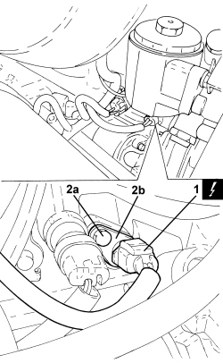

5510C26 ENGINE RPM SENSOR - R+R
- Path
- Procedures > 55 ELECTRICAL EQUIPMENT > 5510 ENGINE IGNITION > 5510C COIL, ECU, SENSORS > 5510C26 ENGINE RPM SENSOR - R+R
- Kind
- repair procedure (removal / refitting; the operation number is the code)
- Applies to
- engines: 2.2 JTS, 3.2 JTS; all production periods
- Interactive page
- https://sloeber94.github.io/elrnDB-aBrrSpdr/en/#/946002353
Applies to: engines: 3.2 JTS; all production periods
Applies to: engines: 2.2 JTS; all production periods
 Removing
Removing
 Refitting
Refitting1. Disconnect the electrical connection for the rpm sensor.
Description | Connector | |
|---|---|---|
1 | Rpm sensor |
2. Undo the bolt (2a) and remove the rpm sensor (2b).

Applies to: engines: 2.2 JTS; all production periods
Refitting
Removing- Position the rpm sensor in its housing and secure it using the bolt.
- Connect the electrical connection for the rpm sensor.
Topics linked from this page (6)
- 1004B10 POWER UNIT WITH MANUAL GEARBOX - R.R
- 1004D10 POWER UNIT (MANUAL GEARBOX), REMOVED, DISMANTLE AND REASSEMBLE
- 1004D40 ENGINE - POSITION ON STAND AND REMOVE
- 1004E10 ENGINE, REMOVED - REMOVE CYLINDER HEAD AND OIL SUMP FOR INSPECTION - INCLUDES POSITIONING ON STAND AND REMOVAL
- 1004E20 ENGINE - DISMANTLE AND REASSEMBLE FOLLOWING OPERATION 1004E10 - WASH AND CHECK DISMANTLED PARTS - REFIT CYLINDER HEAD AND OIL SUMP - DOES NOT INCLUDE REPAIRS TO CYLINDER HEAD AND AUXILIARY UNIT
- K046 RPM SENSOR
Topics that link to this page (10)
- B013 ENGINE STARTS WITH DIFFICULTY
- D001 ENGINE NOT RUNNING SMOOTHLY / (HESISTANT)
- D002 ENGINE NOT RUNNING SMOOTHLY / (LOSING POWER)
- D003 ENGINE NOT RUNNING SMOOTHLY / (IRREGULAR OPERATION)
- D005 ENGINE DOES NOT PRODUCE BEST PERFORMANCE
- D010 ENGINE IDLE IRREGULAR
- E5030 PETROL ENGINE ELECTRONIC MANAGEMENT - WIRING DIAGRAM
- E5030 PETROL ENGINE ELECTRONIC MANAGEMENT - COMPONENT LOCATION
- E5030 PETROL ENGINE ELECTRONIC MANAGEMENT - WIRING DIAGRAM
- E5030 PETROL ENGINE ELECTRONIC MANAGEMENT - COMPONENT LOCATION